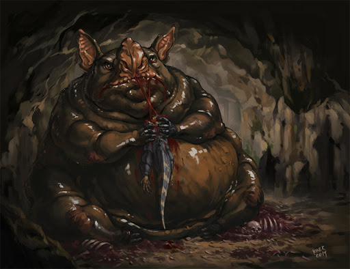

«Пнакотикские Манускрипты» рассказывают о мерзком божестве по имени Тсатоггуа. Обладая аморфным телом, он способен растягиваться в длинную чёрную гадину с хищной пастью, перепончатыми крыльями и тысячью рудиментарных ног либо сживаться в чудовищную многолапую горгулью, похожую на огромную, покрытую шерстью жабу, с чертами летучей мыши, сонными выпученными глазами высунутым из широкого рта мерзким языком. Именно таким запечатлели Тсатоггуа обсидиановые идолы, которыми в дочеловеческие времена поклонялись мохнатые вурмисы, что совершали мерзкие и кровожадные обряды. Они считали себя потомками Тсатоггуа и, подражая ему, жили в подземных нормах и пещерах под горами острова Му-Тулан, ведь он избрал местом своего обитания багровую бездну Н’Кай.
Когда-то бессмертный народ К’ньяна отыскал в этой бездне чёрные изваяния и выстроил в честь Тсатоггуа город Тсат, где стал почитать древнее божество. Но, как и везде вскоре его культ был проклят и попал под строгий запрет. Легенды связывают это с произошедшими от Тсатоггуа похожими на чёрную жижу бесформенными тварями, которые стерегли базальтовые храмы в покинутом всеми Коммориоме, что в Гиперборее. Там в больших бронзовых чашах, они поджигали незадачливых искателей сокровищ, и смерть последних была ужасна. Лишь один Сатампра Зейрос чудом сумел спастись, чтобы поведать о пережитом людям.
Впервые упоминается в рассказе Кларка Эштона Смита «Рассказ Сатампры Зейроса» (The Tale of Satampra Zeiros, 1929). Г. Ф. Лавкрафт же подробно описал его культ в совместной с Зелией Бишоп повести «Курган» (The Mound, 1930).
